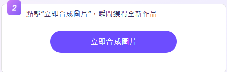
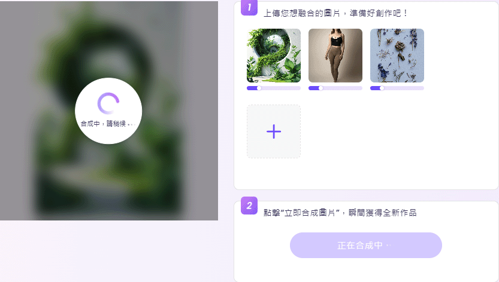
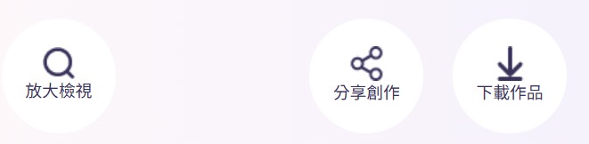

AI 照片合成
Vidnoz AI 提供 圖片融合功能
透過 AI 技術將兩張或多張圖片智能合成，創造出自然流暢的合併效果。
以下是 Vidnoz AI 照片合成的基本流程：
使用步驟
步驟 1：上傳照片
前往 VIDNOZ 官方網站，上傳照片。
選擇一張或多張圖片，這些圖片可以是：
- 人像合成： 將兩張或多張人臉融合，例如父母臉孔合成新面孔。
- 背景融合： 更換場景或環境，使圖片與新背景自然融合。
- 藝術拼接： 創意合成，如雙重曝光效果或其他藝術風格處理。
步驟 2：合成圖片
點擊立即合成圖片
步驟 3：AI 智能合成
AI 會分析圖像元素，如光線、顏色、輪廓、紋理，並進行自動融合，使畫面看起來自然且和諧。

步驟 4：下載與應用
完成後，使用者可下載融合後的圖片，適用於 創意設計、影像藝術、數位拼貼、社群媒體創作 等。

成品
Vidnoz AI 圖片融合 功能適合 藝術創作、照片修飾、趣味影像合成，輕鬆打造高質感 AI 影像！

注意事項
為確保最佳使用體驗，請在使用本工具前留意以下事項：
- 圖片格式： 支援 JPG、PNG 等常見圖片格式，請確保圖片格式相容。
- 圖片尺寸： 上傳圖片時，建議使用相似尺寸，以避免合併後比例失真。
- 解析度要求： 為獲得最佳效果，請使用高解析度圖片，避免模糊或失真。
- 背景處理： 若圖片有透明背景，合併後可能會出現黑色或白色填充背景。
- 合併方式： 支援水平、垂直或自訂方式拼接，請選擇適合的排列方式。
- 上傳圖片數量： 根據工具限制，可同時合併的圖片數量可能有所不同。
返回首頁